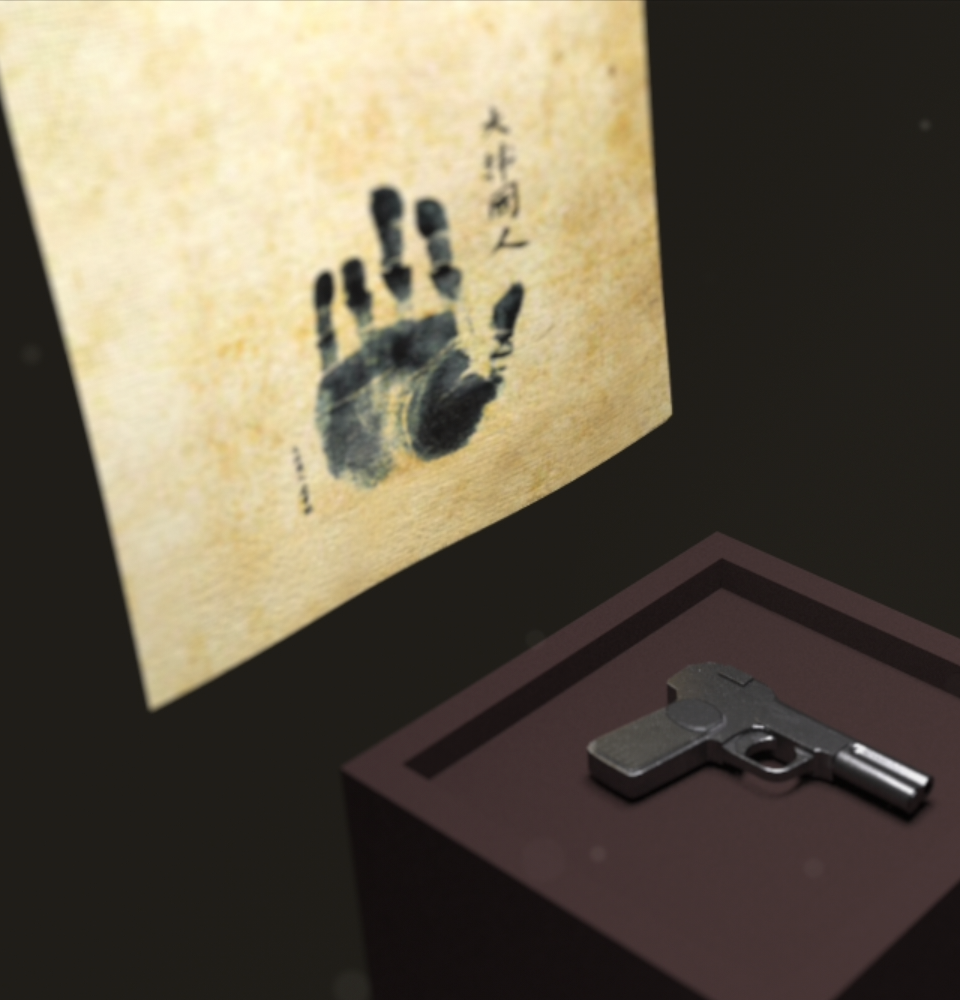
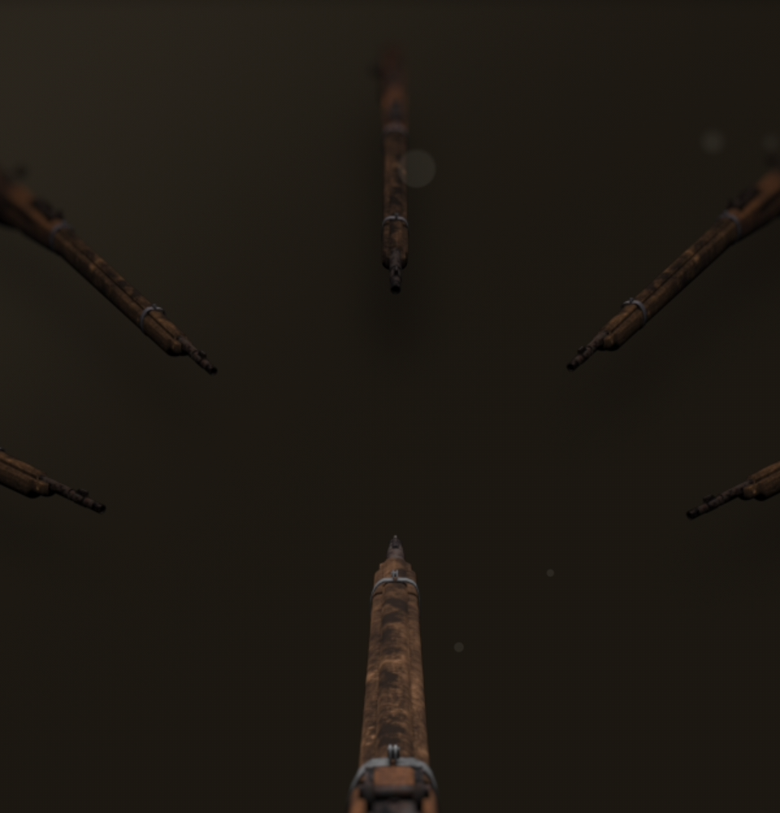
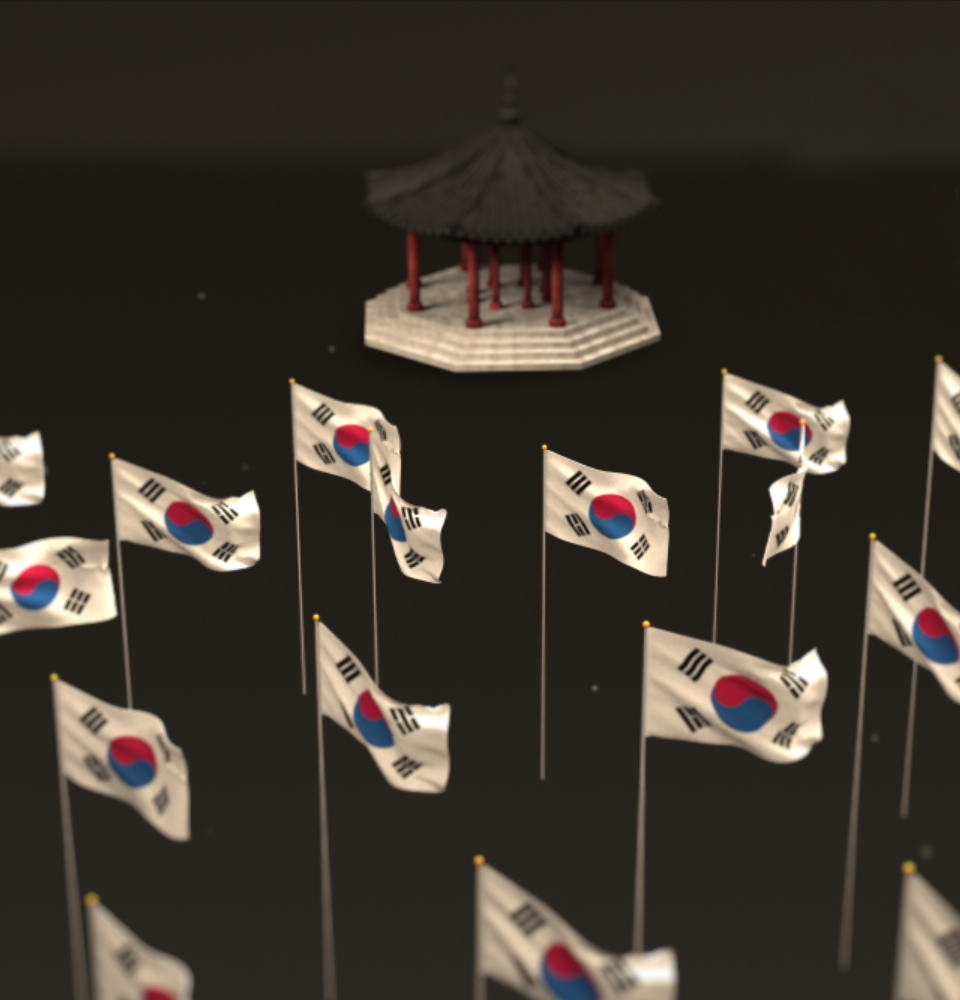
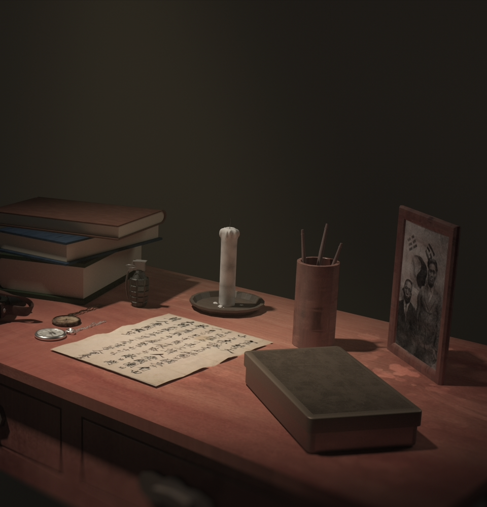
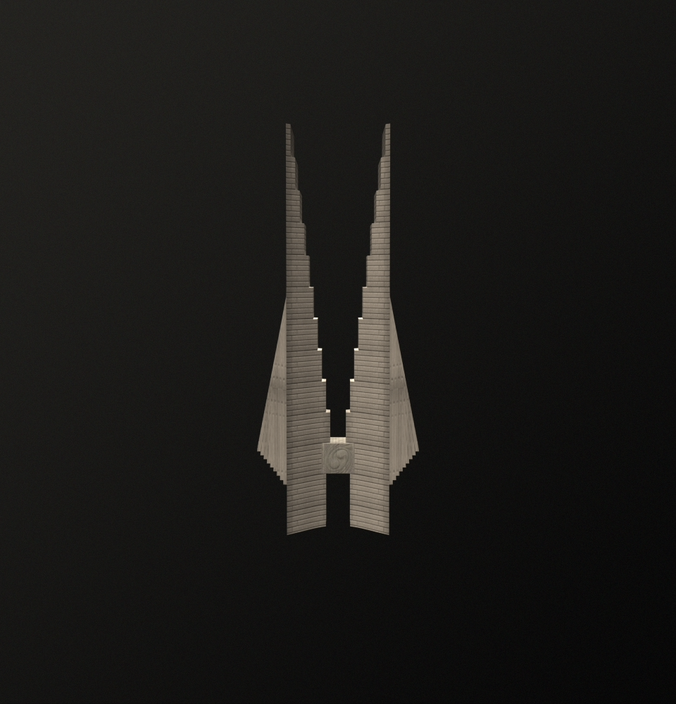

Project 1st |
 |
|
안중근의 손도장과 권총 안중근의 손도장과 이토 히로부미를 저격할 때 사용했던 권총 |
|
| 2019.04.11 |
|  |
Project 2nd |
|
독립운동가들이 사용했던 돌격소총 당시 총의 보급이 부실했던 우리 조상들의 압박감이 느껴진다 또한 당시 돌격소총도 일본군이 사용하던 총을 회수해서 사용했다 |
|
| 2019.04.17 |
Project 3rd |
 |
|
팔각정과 태극기 팔각정에서 태극기를 휘날리며 독립운동을 펼치는 모습을 현상화해보았다 |
|
| 2019.04.26 |
|  |
Project 4th |
|
윤봉길의 책상 윤봉길의사가 거사를 치르기 전날의 책상이라는 컨셉으로 가상으로 제작해보았다 |
|
| 2019.05.06 |
Project 5th |
 |
|
천안독립기념관 탑 모든 독립에 관한 이야기가 기록되어있는 천안독립기념관 탑을 보여주며 마무리된다 |
|
| 2019.05.26 |